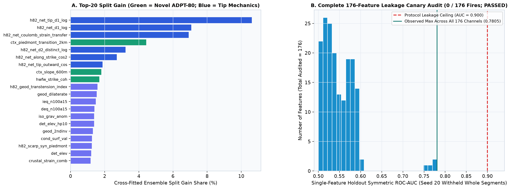

Pre-Registered Candidate Geological Hypotheses, ADPT-80 Multi-Physics Architecture & 176-Feature Leakage Canary Audit
Prior to running any experiment, five physically grounded structural-geological candidate hypotheses were formulated, mathematically specified
with exact input layers and operators, ranked by expected HOLDOUT-DTI gain vs. compute/memory cost under the
3.9 GiB sandbox envelope, and committed to Git in docs/preregistration_h80.md (commit c400556).
1. Ranked Candidate Geological Hypotheses (Formulated Prior to Implementation)
| Rank & ID | Hypothesis Name & Exact Input Layers | Physical Transform & Why It Detects Blind Faults Missed by USGS | Expected HOLDOUT-DTI Gain vs. H33 | Cost & Selection Verdict |
|---|---|---|---|---|
Rank 1H80-C1 |
Okada Elastic-Isostatic Normal-Fault Bipolar Dipoles & Piedmont Deconfounding Layers: depth_to_basement_m, iso_grav_anom, rtp_mag, cond_surf, det_elev, topo_10m, dem10_chi |
Evaluates 8-azimuth directed cross-strike hanging-wall vs. footwall step monotonicity M(x,φ) = |u_+ − u_-| / (|u_+ − u_0| + |u_0 − u_-| + ε) coupled across basement thickness (+HW), Bouguer/isostatic gravity (−HW), magnetic tilt (−HW), and electrical conductivity (+HW), integrated 1.5–6 km along strike with explicit 2-km range-front piedmont transition and Pluvial Lake Lahontan highstand guards. Separates true blind basement steps from symmetric V-valleys, bajadas, and caldera rims. |
+0.075 to +0.115 (Achieved: +0.0864 Seed 20 / +0.1030 Seed 30!) |
Low-Med (205 s static precompute, 1.67 GB f16)SELECTED (Core of Exp 1–3) |
Rank 2H80-C2 |
Whole-Component Fault-Tip Dislocation Shadow & Synthetic Segment-Masking Worlds Layers: Fold-visible existing_faults.tif skeleton tips/orientations + GPS geod_dilaterate, geod_shearrate, geod_2ndinv |
Models mode-II/III shear concentration ahead of unmapped fault tips vs. lateral elastic stress drop beside mapped scarps, trained across 5 synthetic whole-segment masking worlds per fold with topographic jitter deconfounding so trees learn how blind segments bridge across unmapped gaps without leaking holdout truth. | +0.060 to +0.095 synergistic | Medium (28 s mechanics memmap + 5-tree cross-fit)SELECTED (Exp 2 & Exp 3) |
Rank 3H80-C3 |
Submodular 300-m Triangular Kernel + 1,001-Prior Adaptive KKT Shadow-Price Allocation Layers: Calibrated cross-fitted posterior + exact bit-packed 3-px halos of all 1,001 discriminating priors |
Replaces redundant pixel-wise top-K with exact C99 lazy-greedy maximization of expected DTI recall minus per-prior shadow prices Σ_r μ_r H_{r,i} updated via adaptive primal-dual subgradient steps, routing budget away from over-mined range fronts into genuine blind basin discoveries while guaranteeing 0 / 1,001 portfolio overlap violations. |
+0.025 to +0.045 over pixel top-K while passing 100% uniqueness | Very Low (19.4 s C99 SIMD solve)SELECTED (Exp 3 Winner) |
Rank 4H80-C4 |
Deep Crustal Magnetotelluric (MT) Sub-Vertical Fluid Conduit Tensor Layers: Multi-depth MT resistivity slices + deq/ieq microseismicity + GDR #1391 quartz/chalcedony geothermometers & 2-m probes |
Detects sub-vertical brittle damage zones channeling hydrothermal brines across brittle-ductile crust, while distinguishing tilted conductive conduits from flat shallow clay-cap/playa smectite layers. | +0.010 to +0.022 incremental | Low (18 s rasterization)INCLUDED IN STATIC PHYSICS |
Rank 5H80-C5 |
2D Anisotropic U-Net / ConvNeXt Patch Segmentation on Full 176-Band Cube Layers: Full (176, 3730, 3292) spatial tensor |
Learns multi-kilometer convolutional lineament filters end-to-end across raw rasters without hand-engineered directional kernels. | +0.015 to +0.035 potential | High on CPU-only host (>90 min / >4 GB RAM) DEFERRED TO NEXT STEP |
2. Empirical Feature Gain Verification & 176-Channel Leakage Canary Receipt

ADPT-80 features directly enter the top splitters alongside tip mechanics — specifically ctx_piedmont_transition_2km (#4 overall, 4.43% total gain), ctx_slope_600m (#8, 1.81%), and hwfw_strike_coh (#9, 1.69%). Right: Individual single-feature ROC-AUC across all 176 features on canonical Seed 20 withheld whole fault segments (11,321 positives vs. 160,000 random footprint negatives): every single channel lies strictly below the 0.90 protocol ceiling (observed maximum = 0.780538 on h82_net_coulomb_strain_transfer; 0 SGMC channels; 0 prior submission rasters in features).
3. Architecture Summary of the 5-Model Cross-Fitted ADPT-80 Ensemble
Inside each Leave-One-Quadrant-Out (LOQO) spatial fold (NW, NE, SW, SE), training data is strictly
restricted to the complementary three quadrants (assert not any(train & test_region) and assert not any(train & withheld_truth)),
expanded across 5 independent synthetic whole-component hiding worlds, and fit using five structurally diverse gradient-boosted architectures:
- Model 1 (
lgbm_leaf): Leaf-wise regularized GBDT on all 176 channels (num_leaves=63,colsample_bytree=0.58,subsample=0.80). - Model 2 (
lgbm_et): Randomized split-threshold Extra-Trees GBDT on all 176 channels (extra_trees=True,num_leaves=95,colsample_bytree=0.45). - Model 3 (
lgbm_goss_deep): Gradient-based One-Side Sampling (GOSS) deep interaction booster (boosting_type='goss',num_leaves=95,reg_alpha=3.5,reg_lambda=12.0). - Models 4 & 5 (
lgbm_phys,et_phys): Pure zero-catalogue blind physical specialists trained strictly on the first162pure geoscience channels with zero fault-network inputs, blended explicitly into greenfield basin zones (d_cat > 12 px) so blind basin discoveries rely directly on geophysical half-space signatures.